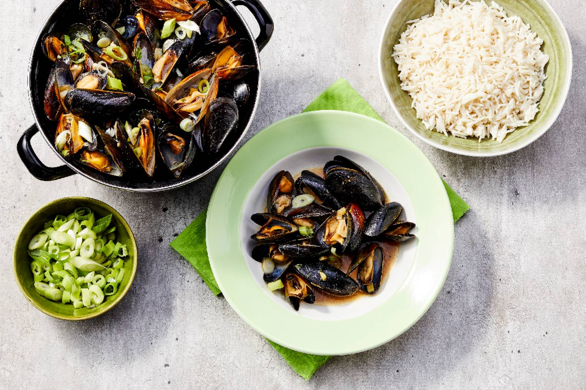

mosselen met gember sake en limoenblad

Ingredienten
- 2 kg verse mosselen
- 3 tenen knoflook
- 50 g verse gember
- 3 diepvries kaffir limoenblaadjes
- 3 el zonnebloemolie
- 2 tl garnalenpasta in potje
- 1 el Lee Kum Lee chiu chow chiliolie
- 300 ml sake
- 6 salade-ui
Bereiding
- Maak de mosselen schoon. Gooi kapotte mosselen weg. Spoel in koud water en verwijder de exemplaren die open blijven als je erop tikt. Laat uitlekken in een vergiet.
- Snijd de knoflook in plakjes, schil en snijd de gember fijn. Kneus het limoenblad.
- Verhit in de grote mossel- of soeppan de zonnebloemolie op middelhoog vuur. Fruit de knoflook, gember en het limoenblad 3 min. Voeg de garnalenpasta en de helft van de chiliolie toe en roer goed door.
- Zet het vuur hoger en voeg de mosselen toe. Doe de sake erbij en laat even goed stomen. Doe de deksel op de pan en laat de mosselen ca. 5 min. stoven, tot alle schelpen open zijn.
- Snijd ondertussen de salade-ui in dunne ringetjes en strooi over de mosselen, schep goed door. Serveer de mosselen met de rest van de chiliolie in het kookvocht.